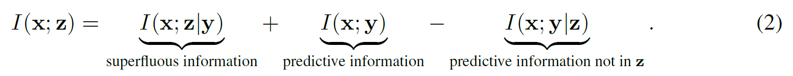
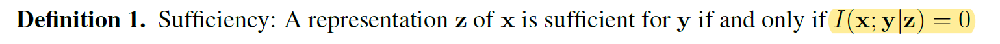
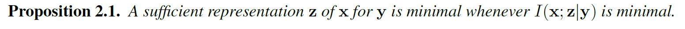
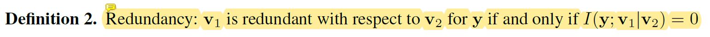
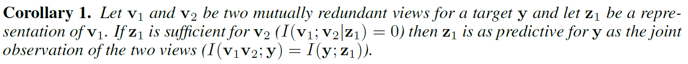
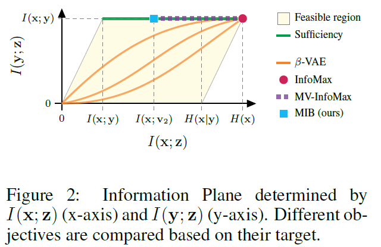
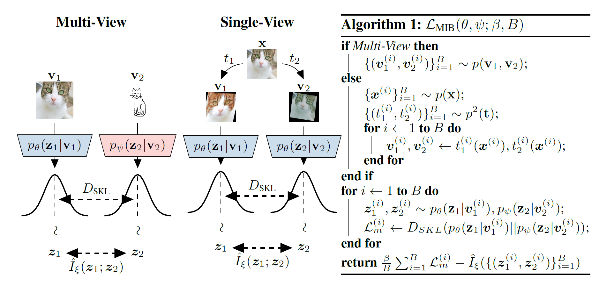
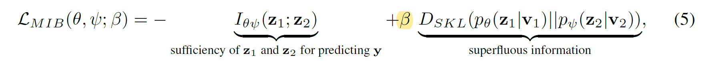
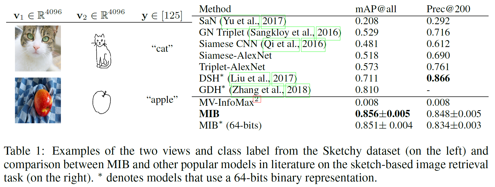
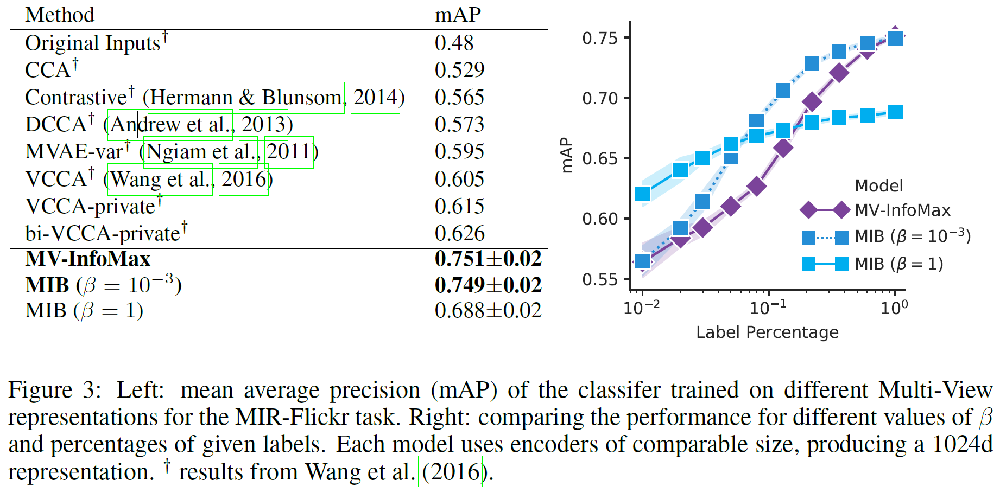

本文是对于信息瓶颈方法的原始公式应用于在学习时可以使用任务特定标签的监督设置中。提出了通过利用muilt-view的方式 (提供一种实体的两类视图)，可以将方法扩展到无监督的设置。本文通过理论分析得到了多视图的定义。还通过利用标准数据增强技术将理论扩展到单视图，比传统的无监督学习的方法相比，有更好的泛化能力。并在数据集Sketchy和MIR-flickr上进行了实验。

表示了x和z之间的互信息分成三部份，第一部分表示为x和z之间的互信息在没有预测为y的情况下；第二部分x，y之间的互信息，是一个常数，该常数由原始观测值标签的信息来决定；减去第三部分，表示x编码为z丢失的和y有关的互信息。第二部分和第三部分的区别就是考虑了z情况下的x，y互信息，包含于没有考虑x，y情况下的，所以减去。
理论:
其中涉及到了几个定理和推论，文中均给出了详尽的证明，涉及到大量的信息论和概率的知识，必须借助维基百科()加上自己的手推才能完全理解本文的思路。在此直接列出所有结论。
定义1，充分性：
z对y充分定义为，I(x;y|z)在z条件下的y对x的互信息为0. 由该定义可以推出如下结论:
$$
I(\mathbf{x} ; \mathbf{y} | \mathbf{z})=0 \Longleftrightarrow I(\mathbf{x} ; \mathbf{y})=I(\mathbf{y} ; \mathbf{z})
$$
命题2.1：

定义2，冗余性

推论1：

附录部分给出了非常详尽的证明，对任何理解上不到位的地方都可以去看数学推导。
Related Work：
为了比较和其他模型的区别，文中这个图对作者使用的情况进行了详细的解释说明。infomax最大化互信息，来实现无监督学习。理想情况下，良好的表示形式将最大程度地提供有关标签的信息，同时保留来自观察结果的最少信息。也就是图中平行四边形左上方的顶点。从图中可以看到MIB模型是最接近最优解的，本文是第一篇明确指出在多视角无监督学习中丢弃冗余信息的一篇文章。
实施方法:
论文的核心思想在这个图上：
在v1和v2两个视图上，分别得到编码得到z1和z2，通过比较两者的分布之间的平均KL散度，以及z1和z2之间的互信息来更新loss。
它的loss为全文核心：

散度减去互信息，其表达了用冗余信息减去预测y充分性下的z1和z2的互信息，我们使得在z1|v1和z2|v2下的的KL散度最大化，即v1，v2呈现不同的视角使其给的信息更加无关，而最大化z1和z2之间的互信息，使得z1和z2的信息更加相关。这样的目的都是消除两个变量之间的相关性，也就是信息瓶颈的意思，让最有用的信息通过去，留下对预测没用的多余信息。本文的意图就是想方设法的使得两个不同分布的数据集关联度尽可能小，简单来讲就是让互信息尽可能小。
最后作者将MIB方法在Sketchy和Flickr数据集上与先前的多视图算法做比较。Sketchy数据集包含来自125个类别的12,500张图像和75,471张手绘草图，是两种信息量上差别很大的图。MIR-Flicker则是通过图像和文字结合，提供两种视角。最后的效果如图所示：分别在Sketchy和Flickr上的效果如下：
可以看到mv-infomax的实力也非常不错，所以文章主要就是和它在做对比。
 我特地去view了代码，发现代码实现的方法非常简单，说明该方法从某一些理论性的角度解决了模型鲁棒性的问题，训练起来速度很快，有一定的参考价值。且论文作者丝毫不避讳地把实验中所有数据全部公开在论文附录里，看来是对论文地实验效果非常有信心，有足够地把握给读者看。总之，可以借鉴地点非常多。之后工作可以围绕他的思路做一些扩展了。
核心代码在这里：
for epoch in tqdm(range(epochs)):
for v_1, v_2, _ in train_loader:
if cuda:
v_1 = v_1.cuda()
v_2 = v_2.cuda()
# Encode a batch of data
p_z_1_given_v_1 = encoder_v_1(v_1)
p_z_2_given_v_2 = encoder_v_2(v_2)
# Sample from the posteriors with reparametrization
z_1 = p_z_1_given_v_1.rsample()
z_2 = p_z_2_given_v_2.rsample()
# Mutual information estimation
mi_gradient, mi_estimation = mi_estimator(z_1,z_2)
mi_gradient = mi_gradient.mean()
mi_estimation = mi_estimation.mean()
# Symmetrized Kullback-Leibler divergence
kl_1_2 = p_z_1_given_v_1.log_prob(z_1) - p_z_2_given_v_2.log_prob(z_1)
kl_2_1 = p_z_2_given_v_2.log_prob(z_2) - p_z_1_given_v_1.log_prob(z_2)
skl = (kl_1_2 + kl_2_1).mean()/ 2.
# Update the value of beta according to the policy
beta = beta_scheduler(iterations)
iterations +=1
# Computing the loss function
loss = - mi_gradient + beta * skl
# Logging
mi_over_time.append(mi_estimation.item())
skl_over_time.append(skl.item())
# Backward pass and update
opt.zero_grad()
loss.backward()
opt.step()
# Plot the loss components every 5 epochs
if epoch % plot_every == 0:
f, ax = plt.subplots(1,2, figsize=(8,3))
ax[0].set_title('$I(z_1;z_2)$')
ax[1].set_title('$D_{SKL}(p(z_1|v_1)||p(z_2|v_2))$')
ax[1].set_yscale('log')
ax[0].plot(mi_over_time, '.', alpha=0.1)
ax[1].plot(skl_over_time, '.r', alpha=0.1)
ax[0].set_ylim(0,8)
ax[1].set_ylim(1e-3)
f.suptitle('Epoch: %d'%epoch, fontsize=15)
plt.show()
# Compute train and test_accuracy of a logistic regression
train_accuracy, test_accuracy = evaluate(encoder=encoder_v_1, train_on=train_subset, test_on=test_set, cuda=cuda)
print('Train Accuracy: %f'% train_accuracy)
print('Test Accuracy: %f'% test_accuracy)点评：
这是一篇很好的多视角表示学习论文，具有新的见解。learn variable z_1和z_2，它们是一致的，包含视角不变信息，但应尽可能丢弃特定于视角的信息。
本文依赖于相互信息估计，并且无需重构。在先前的一些工作中（例如Aaron van den Oord等人2018）中提到，重建损失会引入偏见，对学习的表征产生负面影响。与现有的尝试最大化学习的表示和视图之间的相互信息的多视图表示学习方法相比，本文明确定义了多余的信息，我们应该尝试抛弃这些多余的信息，并弄清楚如何获得足够的学习的表示用于输出。作者还得出了一些现有的（多视图）表示学习方法与他们提出的方法之间的明确联系。